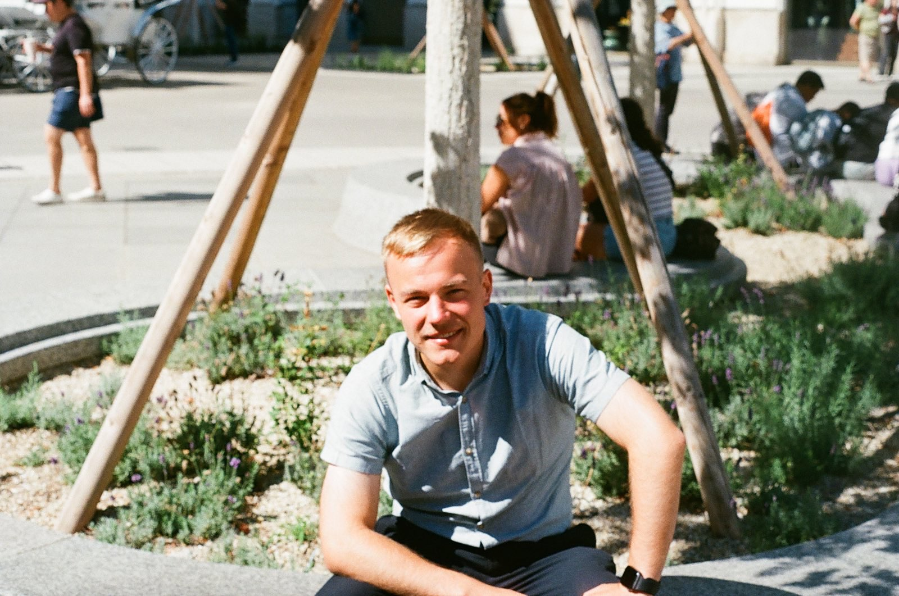
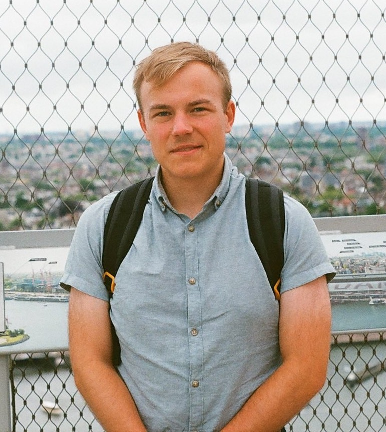

Over Ons
De Familiequizcommissie is het orgaan dat jaarlijks de Familiequiz organiseert. De Commissie bestaat uit vrijwilligers en heeft als doel het organiseren van een quiz die de cohesie onder de deelnemers stimuleert. Momenteel heeft de Commissie 1 lid, de hoofdzetel is gevestigd te Jabbeke.
Commissie 25

De Commissie 25 bestaat uit 1 lid:
- DE NEVE Senne - Voorzitter
Voorzitter

DE NEVE Senne
Senne De Neve is de huidige voorzitter en stichtend lid van de Familiequizcommissie. Met zijn brede kennis en ruime blik op de wereld is zijn lidmaatschap van de commissie een echte troef.
Contact
De Familiequizcommissie kan gecontacteerd worden:
Op volgend adres: Ketelweg 12, 8490 Jabbeke België
Telefonisch: +32 490 43 62 47
Via email: senne.de.neve@gmail.com